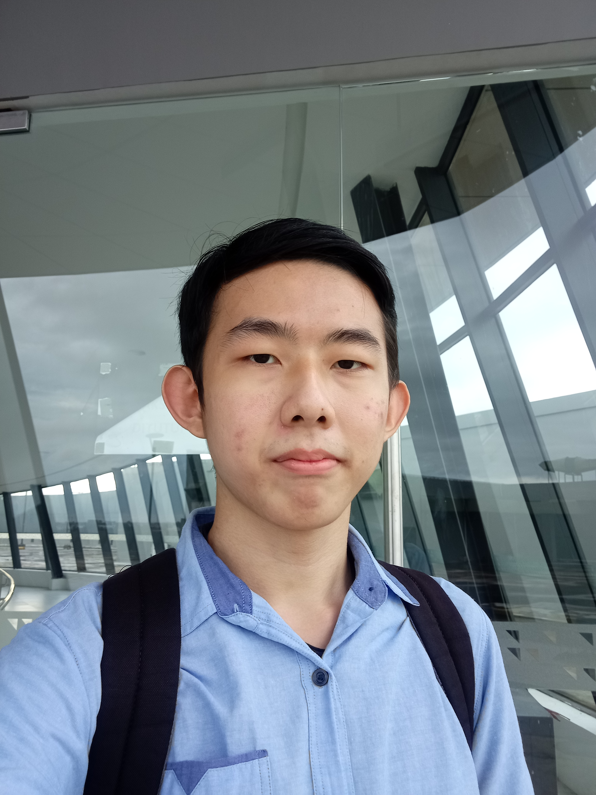

| Winsen adalah mahasiswa dari Institut Teknologi & Bisnis Sabda Setia (ITBSS) dan mengambil jurusan Bisnis Digital. |  |
| Winsen memilih jurusan Bisnis Digital karena jurusan Bisnis Digital memiliki hubungan dengan hal yang ditempuh saat ini, yaitu menjadi seorang pekerja secara digital. Dengan ilmu yang didapatkan, Winsen berharap dapat menghadapi masalah bisnis digital yang akan datang di masa depan. | |
| Winsen memiliki YouTube channel bernama Wincore007 yang memiliki 600+ subscribers. Isi konten yang ada di kanal Wincore007 adalah video animasi Roblox berbahasa Inggris dan Indonesia. Winsen membuat kanal Wincore007 pada tahun 2018 dan memulai kanalnya pada tahun 2019. |